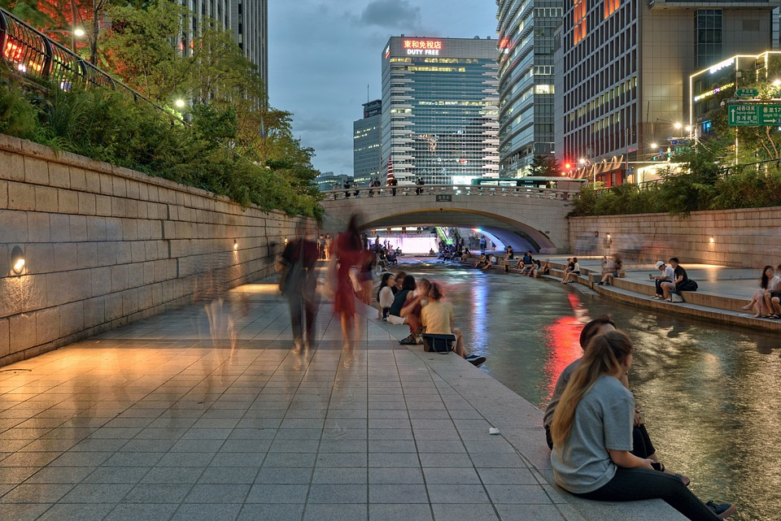

인피자
- 서오릉피자
- 피자알볼로
- 피자나라 치킨공주
- 피자헛
침흘리며 졸다가 피자시킴
피자비교
More than 2,800 flights within, into or out of the United States were already canceled by 10 p.m. ET Sunday, according to flight tracking website FlightAware.
And delays of flights still able to takeoff numbered roughly 6,700.
Christmas DAY is traditionally a light day for passenger flights.
동해물과 백두산이 마르고 닳도록
Demonstrating the sheer size and widespread effects of the storm, it was an airport in the Deep South and another out West that were most affected Christmas Day.
Hartsfield-Jackson Atlanta International (ATL) -- the world's busiest airport for passengers -- saw the second most cancellation and delays as of 10 p.m. Sunday.

No. 1 was more than 1,000 miles away out in the Rocky Mountains with Denver International.
And even farther out West, Harry Reid International (LAS) in Las Vegas had the third-most cancellations.